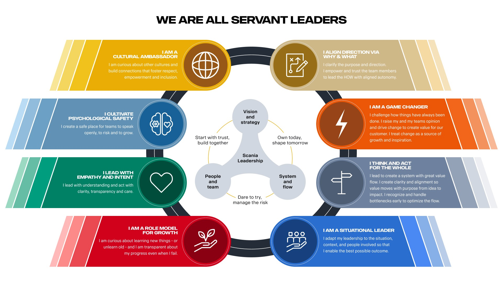

Finder
Find the right exercise or leadership practice
Collection
Leadership lens
Start From A Situation
Pick a situation to narrow the results immediately.
Lenses
How the toolbox is organized
Servant Leadership practices and Liberating Structures now share the same catalog, while still being grouped by leadership intent.